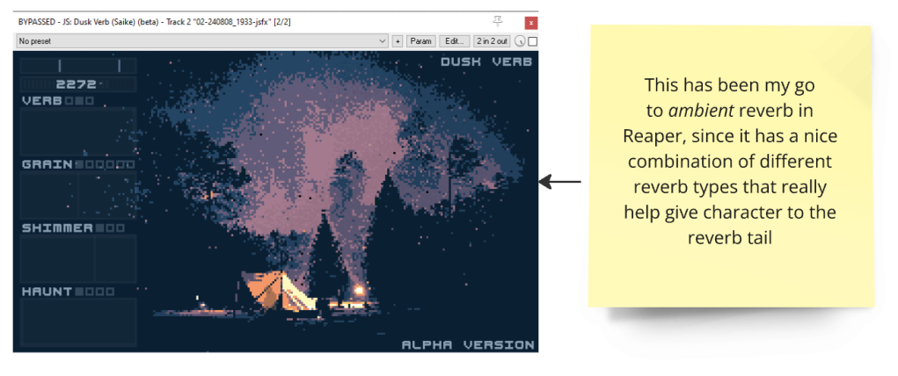

For this jam I wanted to try and use an old electric organ I recently got for free, so I spent the first day trying different effects and other things to make different sounds out of the organ (by itself the stops on the organ sound like dusty Gameboy Square Waves), but didn’t really feel any of the things I tried so I decided to stop for the day
Did some more effect testing, and came to the conclusion that using effects pretty lightly is the way to go, at least for the sort of sound I was looking for.
I messed around in Reaper with some effects, and got a fun drone/pad sound by running the organ fully wet through the Dusk reverb by Saike. I also had Arturia’s Efx Refract before the reverb for a sort of bitcrushed unison effect to further crunch up the sound.
Then tried out the Saike Protosynth synthesizer and got some sort of dusty pad sound that I liked, and tried out some the same effects I had on the organ on it, but ended up just using the Saike SEQS, which has a grid sequencer you can use to sequence the multiple effects inside the plugin.
Using the sequenced effects inside the plugin I managed to get a sort of pulsing bass drone that I liked.
This plugin I hadn’t tried before so it was pretty fun to just mess around without knowing anything about how to properly use it, and it turned out to be a really cool/fun plugin. If you use Reaper, I highly recommend taking a look at Saike’s plugins: https://forum.cockos.com/showthread.php?t=222750
For the last thing I tried the same plugin with some metallic percussion samples, but as of writing, I’m not really sure if I’m going to keep or scrap the idea.
I also tried the Arturia Efx Fragments and reverb combo again, but this time switched the Dusk reverb to a more normal reverb, and tried to use the reverb to place the organ in a big space further away from the listener, also applying some low pass eq before the reverb so the organ would sound more mellow.
After playing a bit with it, I really liked the sound as it reminded me a bit of the lo-fi organ sound in Ryuichi Sakamoto’s Async album (recommend listening if you haven’t before, it’s really a Vibe of its own).
After that I ended for the day.
Got some good feedback from Alex(Kale) in the jam discord about somethings I could tweak and add, so I mostly played around with some sounds again today.
So for today I added another background element in the form of a rhythmic piano, and made to sound a bit metallic with some effects,
I also recorded some short rhythmic Aaah vocalisations that I made sound metallic with effects,
and also recorded some plucks on a nylon guitar I sent through a pretty random set of effects to make an additional rhythmic element to go in the background (made use of the Saike SEQS again here, to get the rhythmic part of the effect chain)
I also modified my effect setup on the electric organ, making it sound a bit closer in the “room” and adding a bit more power to it.
Only had an hour or so to work on the jam, but got suprisingly a lot stuff done.
My original plan for my track was going to somehow use the organ in some form as the base, and then come up with some lyrics to do some vocal stuff on top, as a form of singing practice.
Since I have a pretty busy background already, I might try thinking of some lyrics tomorrow, but I’m pretty bad at writing/coming up with lyrics and stories, so will see if I end with anything like that before the jam ends 😅.
One Reaper script that I found on the Reaper forums that I forgot to mention earlier, was the js_Mouse editing – Multi Tool script, which is a script that gives pretty much all the same cc/automation curve editing functionality that I’ve gotten used to in Cubase, in 1 script that I bound to the § key on my keyboard.
Highly recommend this for anyone using reaper, absolutely love it!
js_Mouse editing – Multi Tool script: https://forums.cockos.com/showthread.php?p=2211574
Didn't do any jam stuff
Since the jam ends at 5 am tomorrow at my time, this is the final day for me to work on, and submit my track.
I really tried to come up with some meaningful lyrics to sing as practice over this track, but I went in a far too ambient/droney style, so I couldn’t come up with anything fitting during the previous days.
So since it’s the final day for me, I just took a direction with the lyrics/words and went all in on what I chose, even if I liked it or not.
I interpreted the theme words “The Light That Pieces the Darkness”, as a severely mentally ill person trying to hold on to their sanity, so I did the lyrics as almost a sort of spoken word chanting, more than singing. I felt that would be more appropriate, since the whole rest of the track is very moody and droney as it keeps slowly building up to the end.
I wanted to make the voice stuff sound lo-fi/grungy like the other elements, but I’m not sure if I made it too lo-fi so that it became unintelligible, but it’s what it is I guess.
The whole idea for the lyrics came up really as I was going to give up and just submit the track without any voice stuff, so I’m not really happy with the delivery on the vocal parts and the mixing, but I ran out of time to keep doing re takes😅